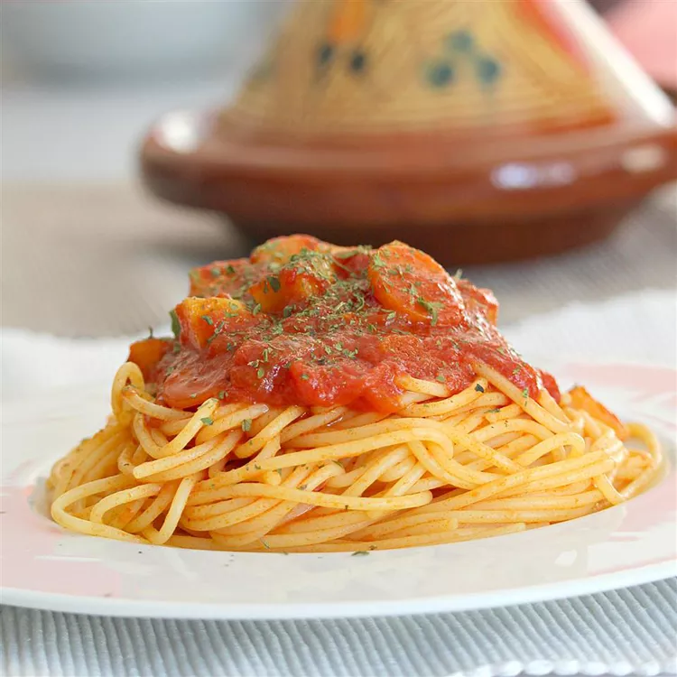

Somali Spaghetti Sauce
Home

Description
This Somali-style spaghetti sauce recipe has my own little tweak to it. We
make this once a week. I hope you enjoy this!
Ingredients
- 2 tablespoons chopped fresh cilantro
- 4 cloves garlic
- 1 teaspoon cumin seeds
- 1 teaspoon Himalayan pink salt
- 1 teaspoon ground turmeric
- 1 teaspoon paprika
- 1 teaspoon Italian seasoning
- 1 teaspoon salt-free seasoning blend
- ½ teaspoon ground black pepper
- ¼ cup olive oil
- 1 pound lean ground beef
- 1 onion, diced
- 2 carrots, diced
- 1 large potato, peeled and cubed
- 2 (14 ounce) cans diced tomatoes
- 2 tablespoons water, or to taste (Optional)
- 1 (16 ounce) package angel hair pasta
Steps
-
Place cilantro and garlic in the bowl of a food processor; pulse until
finely chopped.
-
Toast cumin seeds in a small pot over low heat until fragrant, 2 to 3
minutes. Cool, 5 minutes. Grind into a powder using a spice grinder or a
mortal and pestle.
-
Transfer ground cumin to a small bowl. Add Himalayan pink salt,
turmeric, paprika, Italian seasoning, seasoning blend, and black pepper;
set spice mixture aside.
-
Heat oil in a large pot over medium heat. Add ground beef; cook and stir
until browned, about 5 minutes. Stir in 1/2 spice mixture. Add onion;
cook and stir until softened, about 5 minutes. Add carrots and potato;
cook, covered, stirring occasionally, until slightly softened, about 5
minutes.
-
Stir in tomatoes; bring sauce to a boil. Reduce heat to medium-low; stir
in cilantro-garlic mixture and remaining 1/2 spice mixture. Simmer,
stirring occasionally, until flavors combine, 30 to 40 minutes. Thin
sauce with water if it seems too thick.
-
Bring a large pot of lightly salted water to a boil. Cook angel hair
pasta in the boiling water, stirring occasionally, until tender yet firm
to the bite, 4 to 5 minutes. Drain. Serve sauce over pasta.